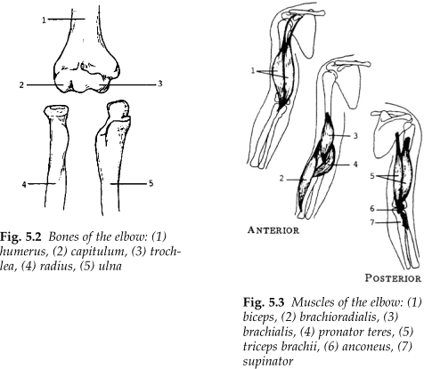
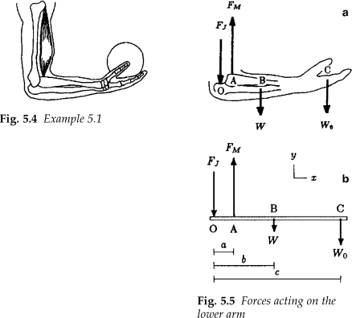

Ask AI:
Skeletal joints can be classified according to the degree of relative motion they permit. (Reading Section 5.1)
There are three types of muscles in our body
The most important characteristic of skeletal muscles is their ability to contract under stimulation. Contraction is classified according to the direction of motion (flexion/extension).
Muscles are also characterized according to the role they play in motion.
Muscles and bones around the elbow joint.

Using only the dominant muscle (biceps)

The complexity is slightly increased by including the synergistic muscles (brachialis, brachioradialis)
Ask AI:
By the end of this lecture students should be able to: